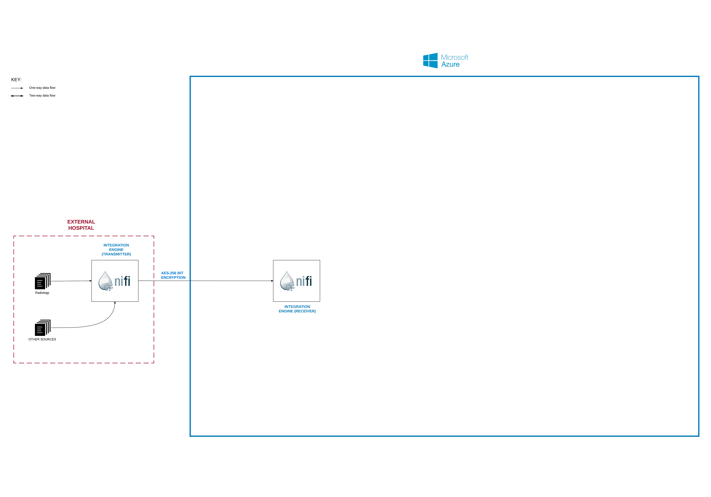

To get this data across, we need an “integration engine”.
For this, we are using NiFi. This is a great program for constructing data flows using a GUI-driven building process. This has many useful features including:
a) ability to transmit encrypted data (we need to use AES-256-bit encryption for NHS data)
b) fully auditable data flow
c) easy interface for non-programmers to construct new data flows
d) ability to transform data in preparation for storage in the receiving system.
e) ability to accept data in many forms (eg file dump, SQL access, consumer of Kafka etc)
In this diagram, we have a “sending” node in the hospital and a “receiving” node within our platform.
We also have radiology data as the main use case in this project, but it can be used for other data in the future. We will be demonstrating the full processing pipeline for this data, and aim to optimise this pathway.
